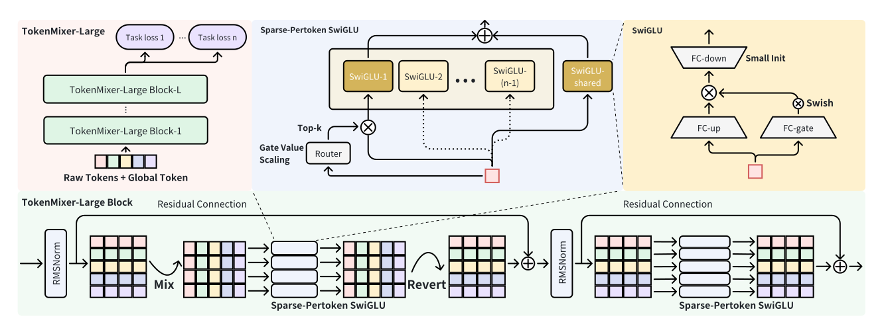
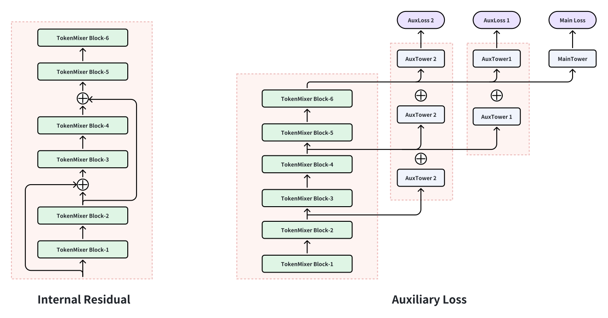
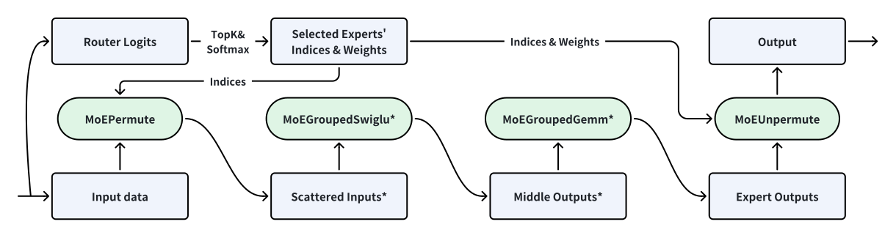
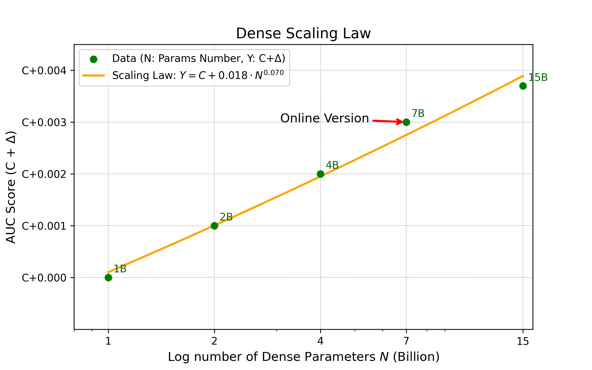
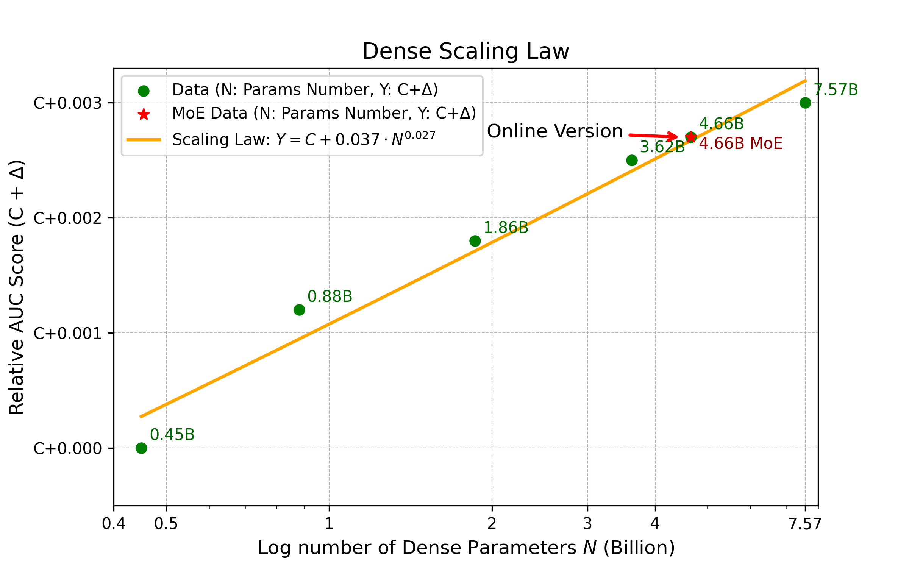
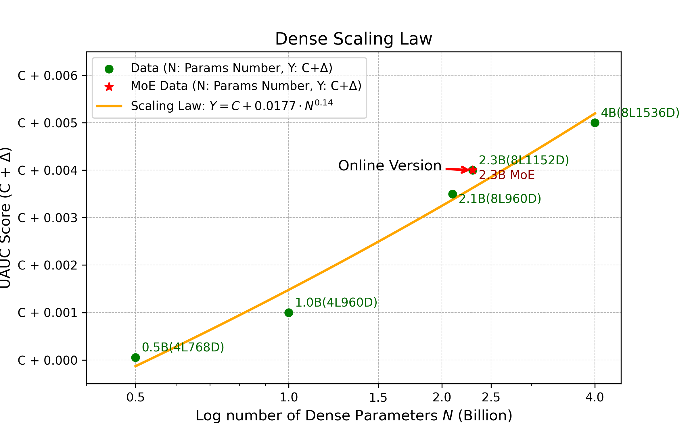
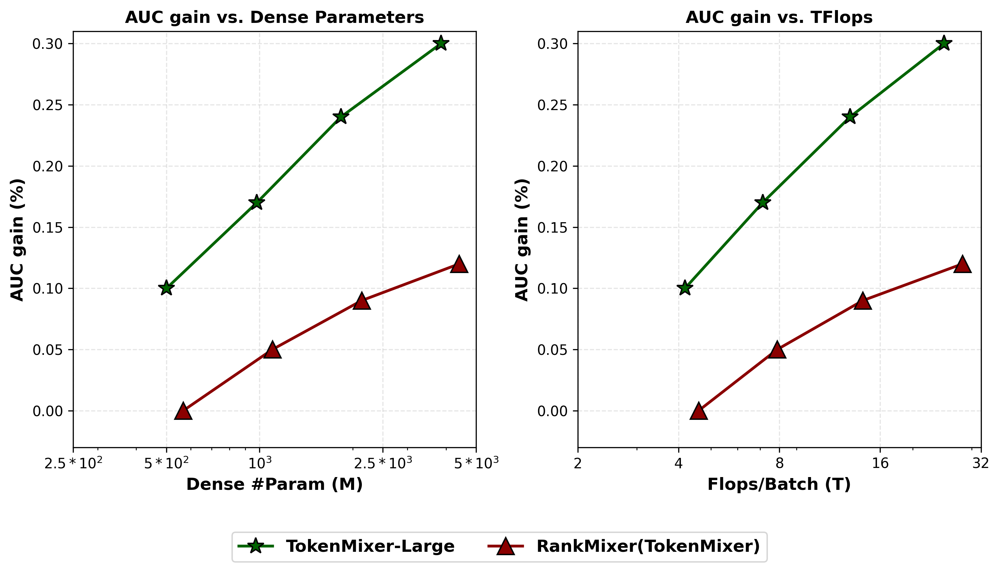
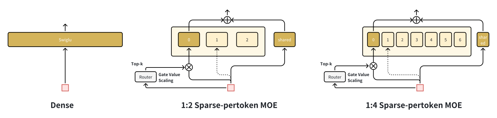
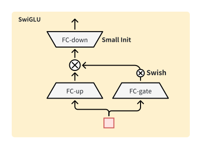

TokenMixer-Large：在工业推荐系统中扩展大型排序模型
摘要
尽管推荐模型的缩放定律已获得显著关注，但现有架构如 Wukong、HiFormer 和 DHEN 常常受困于次优设计与硬件利用率不足，限制了它们的实际可扩展性。我们之前的 TokenMixer 架构（在 RankMixer 论文中提出）通过用轻量级词元混合算子替代自注意力，平衡了有效性与效率；然而，它在更深的配置中遇到了关键瓶颈，包括次优的残差路径、梯度消失、不完整的 MoE 稀疏化以及受限的可扩展性。在本文中，我们提出 TokenMixer-Large，一种为极端规模推荐而设计的系统性演进架构。通过引入混合与还原操作、层间残差以及辅助损失，我们确保随着模型深度增加时梯度的稳定传播。此外，我们引入稀疏逐词元 MoE 以实现高效的参数扩展。TokenMixer-Large 成功扩展到线上流量的 7 × 十亿参数以及离线实验中的 15 × 十亿参数。目前已在字节跳动的多个场景中部署，TokenMixer-Large 取得了显著性能提升：在电商中实现订单量 1.66% 的增长和人均预览支付 GMV 的 2.98% 提升；在广告中实现 ADSS 提升 2.0%；在直播中实现收入增长 1.4%。
Corresponding authors.
1. 引言
推荐系统（RS）在当今互联网生态系统中发挥着关键作用，驱动着电商 (Chen et al., 2019; Zhou et al., 2018)、在线广告 (Lin et al., 2023; Jiang et al., 2022)、内容信息流 (Zhu et al., 2025; Chang et al., 2023) 和直播 (Chai et al., 2025) 等关键应用。因此，工业界和学术界都致力于推荐模型和架构的持续迭代与升级。随着深度学习的广泛采用，深度学习推荐模型（DLRM）已展现出显著的有效性。这些模型通常首先通过嵌入层将高维稀疏的用户、物品和行为特征转换为低维稠密嵌入。随后，设计复杂的特征交互层以捕捉潜在的用户-物品关系。
受大型语言模型（LLM）(Achiam et al., 2023; Touvron et al., 2023; Liu et al., 2024) 成功的启发，特征交互领域的研究开始探索 DLRM 的缩放定律：研究是否可以通过增加模型参数和 FLOPs 来持续获得性能提升。早期工作主要集中于仅扩展模型宽度或交互层参数，缺乏深思熟虑的架构设计，限制了其有效性。后续工作如 Wukong (Zhang et al., 2024)、HiFormer (Gui et al., 2023) 和 DHEN (Zhang et al., 2022) 尝试设计更精细的模型结构并进行扩展（在规模、宽度和深度上），但往往忽视了硬件对齐的协同设计与优化，导致性能次优。
目前，工业界领先的 SOTA 模型结构是 TokenMixer——Transformer 的高度简化变体。它通过用轻量级词元混合操作替代注意力机制，显著降低了计算复杂度。RankMixer (Zhu et al., 2025) 将其用作骨干网络，并验证了该结构在排序模型中的有效性。通过硬件感知的协同设计，它大幅提升了模型 FLOPs 利用率（MFU），同时保持缩放效率，极大地增强了硬件使用率。 尽管取得了工业成功（例如 RankMixer），我们仍识别出 TokenMixer 的几个关键局限性：
-
•
次优的残差设计：由于 RankMixer 通过混合机制将原始词元转换为新词元，它要求新词元数量 与原始数量 匹配，以确保原始语义信息的完整性和传播。此外，在其加与归一化操作中，RankMixer 直接对混合前后的词元进行相加，这常常触发语义错位，最终导致次优性能。
- •
-
•
深层模型中梯度更新不足：在工业设置中，TokenMixer 通常配置为较浅的深度（例如 RankMixer 中的 2 层）。随着模型深度增加，实现训练稳定性和性能提升变得具有挑战性。当前的 TokenMixer 缺乏针对深层架构的定制设计。
- •
-
•
有限的扩展探索：由于框架和训练效率的限制，RankMixer 的参数规模仅被推至约 1 × 十亿参数。
为应对这些挑战，我们设计并深入探索了 TokenMixer-Large。TokenMixer-Large 框架包含词元化、TokenMixer-Large 块和稀疏逐词元 MoE 等模块。一个 TokenMixer-Large 块包含混合与还原、逐词元 SwiGLU、残差与归一化以及区间残差与残差损失等组件。通过堆叠多个 TokenMixer-Large 块，我们在工业场景中显著提升了离线和在线模型性能。 本文的贡献总结如下：
-
•
我们提出 TokenMixer-Large。通过重新审视并重新设计 TokenMixer 中有缺陷的残差机制，我们引入了混合与还原操作。对关键组件的大量消融实验表明，TokenMixer-Large 是一种更优越的模型架构。
-
•
我们观察到，随着模型规模扩大，底层碎片化算子带来的收益可以被堆叠多个 TokenMixer 块所取代。移除这些算子大幅提升了模型 MFU 和硬件利用率。我们将这种“纯模型”理念融入 TokenMixer-Large，将广告骨干网络的 MFU 提升至 60%
-
•
为解决深层模型中梯度更新不足的问题，我们在 TokenMixer-Large 块中引入了区间残差、辅助损失机制和下矩阵小初始化，促进深层模型更好地收敛。
-
•
我们将 RankMixer(TokenMixer) 中的 relu-MoE 升级为具有统一“稀疏训练、稀疏推理”范式的稀疏逐词元 MoE 版本。结合高效的算子设计以及 FP8 和 词元并行 等工程优化，稀疏逐词元 MoE 显著降低了训练和推理成本。
-
•
我们对不同模型的缩放定律进行了全面研究，验证了 TokenMixer-Large 的优越性。我们成功地将模型在抖音广告和电商场景的离线实验中分别扩展到 15B 和 7B 参数。在在线流量实验中，这些模型分别被扩展到 7B 和 4B 参数。TokenMixer-Large 现已部署在字节跳动的多个在线场景中，在服务数亿用户的同时实现了 2% ADSS 和 2.98% GMV 的在线收益。
2. 相关工作
深度学习推荐模型（DLRM）(Covington et al., 2016) 的核心在于设计有效的特征交互架构。Wide and Deep (Cheng et al., 2016) 作为经典工作之一，通过 bagging 风格的方法捕捉低阶和高阶特征交互。这种建模范式体现在后续设计中，如 DeepFM (Guo et al., 2017)、XDeepFM (Lian et al., 2018)、PNN (Qu et al., 2018)、DCN (Wang et al., 2017)、DCNv2 (Wang et al., 2021) 和 FCN (Cheng et al., 2016)。然而，作为早期设计，这些模型仍依赖于来自 CPU 时代的低效、高延迟算子，未能充分利用 GPU 的计算能力。在不同子结构的 bagging 基础上，DHEN (Zhang et al., 2022) 和 Wukong (Zhang et al., 2024) 进一步验证了推荐系统中的缩放定律，表明“统一设计、堆叠层”的迭代模式也能在推荐任务中取得显著收益。
作为基础模型，Transformer (Vaswani et al., 2017) 已在 GPU 时代被广泛证明具有强大的通用性（CV (Dosovitskiy, 2020; Liu et al., 2021)、NLP (Touvron et al., 2023; Liu et al., 2024) 和 RS (Song et al., 2019)）和良好的缩放定律 (Kaplan et al., 2020; Wu and Tang, 2024) 特性。在推荐领域，AutoInt (Song et al., 2019) 和 HiFormer (Gui et al., 2023) 等模型通过引入注意力机制增强了特征交互能力。RankMixer (Zhu et al., 2025) 和 MLP-Mixer (Tolstikhin et al., 2021) 进一步将注意力简化为更轻量级的词元混合操作，降低了标准注意力相关的二次计算成本。LONGER (Chai et al., 2025)、HSTU (Zhai et al., 2024) 和 MTGR (Han et al., 2025) 等工作也在不同程度上展示了基于 Transformer 的模型（及其变体）在序列建模和生成式推荐场景中的扩展潜力。
3. 方法

3.1. 整体架构
如图 1 所示，TokenMixer-Large 框架的整体架构由三部分组成：1）。词元化，将原始高度稀疏的独热特征转换为稠密嵌入，然后转换为维度对齐的语义词元。2）。词元混合与通道混合，遵循“混合与还原”范式以解决 RankMixer(TokenMixer) 中的维度不匹配问题。3）。稀疏逐词元 MoE，是 RankMixer(TokenMixer) 中提到的 Pertoken-FFN/relu-MoE 的升级版本。最后，我们使用均值池化方法聚合输出词元，输出表示将用于各种任务预测。
3.2. 词元化
3.2.1. 语义分组词元化器
工业推荐系统通常包括用户特征、物品特征、序列特征（例如，覆盖短期（DIN (Zhou et al., 2018)）、长期（SIM (Pi et al., 2020)）、超长期（LONGER (Chai et al., 2025)）兴趣的用户行为历史）和交叉特征。第一步涉及通过嵌入层将所有这些特征从高维稀疏空间投影到低维稠密空间，其中特征 将被嵌入为 ，其维度 可变
| (1) |
鉴于 TokenMixer-Large 是一种高度并行的架构设计，有必要将变长嵌入表示转换为维度对齐的特征词元，以便于后续计算。为此，我们根据语义含义对不同维度的嵌入进行分组，并在执行压缩和对齐之前拼接每组内的嵌入 。考虑到不同语义组代表不同的特征特性，我们在压缩和对齐过程中采用不同的 DNN 映射以保持其异质性。
| (2) |
3.2.2. 全局词元
除了语义分组词元外，我们还引入了一个专门设计用于封装全局信息的 全局词元。受 BERT 中 [CLS] 词元机制的启发，该全局词元旨在聚合全局信息并将其传播到其他词元。
| (3) |
TokenMixer-Large 的最终输入是全局词元和增强词元的组合。
| (4) |
3.3. TokenMixer-Large 块
TokenMixer-Large 采用多个 TokenMixer-Large 块的堆叠结构。每个块可以分解为三个组件：混合模块、逐词元 SwiGLU 和归一化。
3.3.1. 混合与还原
RankMixer（TokenMixer）块可以表述如下。
| (5) | |||
| (6) | |||
| (7) | |||
| (8) |
如图所示，原始输入中的词元数量为，而第i层混合后的词元数量为H。除非每一层的保持不变且等于，否则残差连接无法在各层之间顺畅传播。为克服这一限制，我们设计了TokenMixer-Large，其具有特殊的两层TokenMixer结构：第一层负责在原始词元之间混合信息，而第二层专门恢复混合后词元的维度。这种对称的“混合–还原”设计确保了各模块输入与输出在维度上的一致性，从而在初始输入到深层网络之间建立起连续的信号通路。它使每一层都能保持稳定的残差连接，并有效防止梯度信息的损失。与RankMixer(TokenMixer)的详细对比可见第4.3节
| (9) | |||
| (10) | |||
| (11) | |||
| (12) | |||
| (13) | |||
| (14) | |||
| (15) | |||
| (16) |
3.3.2. 逐词元SwiGLU
RankMixer(TokenMixer)引入了一种参数隔离的前馈网络架构，称为pertoken FFN，旨在对不同词元之间的特征异质性进行建模。在TokenMixer-Large中，我们将pertoken FFN升级为逐词元SwiGLU（pertoken SwiGLU）。
| (17) |
其中
| (18) |
是pertoken SwiGLU的单一MLP， ， ， ， ， 是用于调整pertoken SwiGLU隐藏维度的超参数， 是Swish激活函数，是第个词元。
3.3.3. 残差与归一化
3.3.4. 跨层残差与辅助损失
如图2所示，除标准残差连接外，我们还引入了跨层残差连接（通常每隔2或3层添加一次），以加强跨层信息流动。它主要解决梯度消失问题。通过增强低层特征向高层的传递，它加速了早期层参数的收敛，并缓解了深层网络中梯度的逐渐衰减。 间隔残差连接不建议用于最后一层。最后一层的主要作用是提炼高度抽象的高层特征，为后续分类任务提供精确支持。引入过多原始低层信息可能干扰这一抽象过程，从而损害最终任务性能。
同时，通过将低层输出计算得到的logits与高层输出的logits结合用于联合损失计算，形成了一种轻量的辅助损失。该机制本质上是让低层学习“估计高层特征的偏差”，从而增强其特征表示能力。它有助于防止随着网络加深而出现的低层参数训练不足，从而实现更充分的参数学习，并使深度模型性能更加稳定。

3.4. 稀疏逐词元MoE
为进一步提升TokenMixer-Large的性价比，我们设计了Sparse-pertoken MoE（稀疏逐词元MoE），它基于pertoken SwiGLU将每个专家扩展为多个子专家并以稀疏方式激活它们。与Rankmixer的“稠密训练、稀疏服务”相比，这实现了“稀疏训练、稀疏服务”，显著降低了超大规模推荐模型的训练与推理成本。
3.4.1. 先扩大，后稀疏
在迭代策略上，我们采用“先扩大、后稀疏”的方法：先扩大模型规模以获得效果，再拆分pertoken SwiGLU并以稀疏方式激活以获得效率收益。Sparse-Pertoken MoE（S-P MoE）可形式化如下：
| (19) | ||||
其中 ， ， ， 。是每个词元的专家数量。是路由器的top-k数量。被选中专家的被约束为总和等于1，此约束通过实现，表示被激活专家的概率之和为1。详细的设计理念与实验结果可见附录A.1。
3.4.2. 共享专家
目前，若干基于MoE架构的大语言模型提及使用共享专家来提升训练稳定性和效果，我们在实践中也采用了这一设计。值得注意的是，此处的共享专家仍然是按词元分配的，而非对所有词元全局可见的共享专家。
| (20) |
3.4.3. 门控值缩放
在实践中我们观察到，由于通常使用softmax将路由器logits转换为和为1的概率分布，这种归一化约束可能导致SwiGLU的梯度更新不充分。因此，我们加入一个常数，位置在之前，以便专家网络获得更充分的更新：
| (21) |
| Operator | Training | Serving | ||||
| Time(ms) | Percentage | Type | Time(ms) | Percentage | Type | |
| MoEGroupedFFN | 136.77 | 89.18% | Compute Bound | 7.43 | 98.35% | Memory Bound |
| MoEPermute | 6.32 | 4.12% | Memory Bound | 0.06 | 0.75% | Memory Bound |
| MoEUnpermute | 10.27 | 6.69% | Memory Bound | 0.07 | 0.90% | Memory Bound |
3.4.4. 下矩阵小初始化
受Rezero(Ramesh et al., 2021)启发，我们降低了SwiGLU中最后一层W_down的初始化方差（我们使用xavier_uniform并将标准差超参数从默认值1降至0.01）。这一调整使项（位于中）在训练早期接近零，有效使该模块在初始阶段表现得近似恒等映射，从而提升训练稳定性。它还有助于缓解SwiGLU中up矩阵与gate矩阵乘性交互导致的输出值爆炸问题。
综合上述修改，我们的MoE模型版本在仅激活一半参数的情况下，性能可接近完全激活的稠密模型。我们还从图7中观察到，引入这些改动后，各词元之间的负载得到良好均衡，无需额外的负载均衡损失。详细分析可见附录A.2

3.5. 训练/服务优化
我们开发了一套高性能算子，以提升TokenMixer-Large在训练和推理中的效率。
3.5.1. 高性能自定义算子
3.5.2. FP8量化
我们在推理阶段采用FP8 E4M3训练后量化，同时在整个训练过程中保持bfloat16精度。线上实验表明，FP8服务可提供1.7倍加速，且不损害模型精度。 如图3所示，输入在MoEPermute中被量化，且所有专家权重均已预先量化。 接着，MoEGroupedSwiglu融合输出量化并直接产生量化激活值。 类似地，MoEGroupedGemm使用FP8进行计算并以bfloat16格式输出结果。
3.5.3. 词元并行
在分布式多设备环境中扩展TokenMixer-Large架构会引入显著瓶颈。对于训练，主要挑战是GPU内存容量和整体训练时间。随着模型增长，其参数和激活值可能超出单个设备的内存。对于服务，问题更加严重：小批量在线推理使计算受内存带宽限制，导致硬件利用率低、吞吐量低。一种朴素的模型并行方案会将逐词元操作权重分片到各设备，需要在每次计算前后都执行“all2all”操作以切换分片布局，导致每个块总共需要四步通信。为解决这些问题，我们提出了Token Parallel（词元并行），这是一种专为TokenMixer-Large架构设计的模型并行策略。它将模型参数（具体为逐词元操作权重）和计算划分到多个设备上。
实现
Token Parallel的实现使数据分片与TokenMixer-Large块的计算流程相对齐，该流程由“混合”和“还原”两个步骤组成，随后是逐词元操作。下文所有张量均可视为分布式张量。我们使用Shard(dim)表示在特定维度上分片的张量。
借助Token Parallel，输出仍按词元维度分片（Shard(token)），并直接馈入下一个块，而该块初始的“split”操作可以在这种布局上工作。这消除了两次额外通信步骤，将开销从降低到，这里考虑层，因为仅在末尾才需要一次all_to_all来恢复批次分片。
Token Parallel策略在训练和推理中均带来显著的性能提升。在生产服务中，具有4路词元并行的TokenMixer-Large模型（全局批量大小为320）相较于非并行基线实现了29.2%的吞吐量提升。通过将通信与计算重叠，采用细粒度微批调度或内核内计算-通信重叠等技术，这一提升进一步增至令人瞩目的96.6%。
 |
 |
 |
| (a) Feed Ads 15B | (b) E-Commerce 7B | (c) Live Streaming 4B |
4. 实验
4.1. 实验设置
4.1.1. 数据集与环境
本研究的离线实验主要在来自抖音主信息流电商场景的真实训练数据集上进行。该数据集源自平台的线上日志和用户反馈标签，包含商品点击、转化和商品交易总额（GMV）等指标。训练集包含超过500个不同特征——包括数值特征、ID特征、交叉特征和序列特征——覆盖数亿独立用户。经过采样流程后，数据集在两年时间内每天约包含400 × 百万条记录。
离线实验还包括来自抖音广告和抖音直播的真实训练数据。经过采样后，日数据量分别达到300 × 百万条和17 × 十亿条记录。
4.1.2. 评估指标
我们使用AUC（曲线下面积）和UAUC（用户级AUC）作为主要效果指标，并使用稠密参数量、FLOPs和MFU作为效率指标，具体如下：AUC/UAUC：我们采用CTR和CVR任务的AUC作为主要效果指标。 参数：我们使用纯稠密参数数量（不包括稀疏嵌入）作为效率衡量指标之一。 每批次训练FLOPs：指模型处理单批2048个样本所需的浮点运算次数，代表训练的计算成本。 MFU：模型FLOPs利用率，衡量模型对硬件理论浮点计算能力的实际利用效率。
4.1.3. 基线
我们主要比较以下被广泛认可的SOTA基线模型：DLRM-MLP (Rumelhart et al., 1986)，它采用多层感知机（MLP）进行特征交互。DCNv2 (Wang et al., 2021)，是“Deep & Cross Network”的改进版本，提供了更深、更强的特征交叉能力。AutoInt (Song et al., 2019)，旨在通过多头自注意力自动且显式地学习高阶特征组合。HiFormer (Gui et al., 2023)，它通过使用异构自注意力层和低秩近似来修改标准自注意力机制。DHEN (Zhang et al., 2022)，采用bagging思想，将多种类型的特征交互模块（DCN/SA/FMB）集成在一个块内，并堆叠多个层。Wukong (Zhang et al., 2024)，它将因子分解机模块（FMB）和线性压缩模块（LCB）打包成两个模块，堆叠多个层，并研究特征交互的缩放定律。Group Transformer：我们内部设计的Transformer变体，用于建模异构特征。它通过对特征进行分组并将其聚合为少量词元来降低自注意力的计算复杂度，并采用pertoken Q/K/V/O来增强模型表示异构特征的能力。 FAT (Yan et al., 2025)：Group Transformer的升级版本，它在pertoken Q/K/V/O的基础上使用正交基组合来提升模型性能。 RankMixer (Zhu et al., 2025)：围绕一个替代自注意力的TokenMixer块构建，大幅降低了计算成本。
所有实验均在一个由64块GPU组成（电商场景；Feed-Ads和直播场景则为256块GPU）的混合分布式训练框架中进行。该框架对稀疏参数采用异步更新，对稠密参数采用同步更新。所有模型的优化器超参数保持一致：稠密部分和稀疏部分均使用Adagrad优化器，学习率分别设置为0.01和0.05。
| Model | CTCVR | Efficiency | |
| AUC | Params | FLOPs/Batch | |
| DLRM-MLP-500M (Rumelhart et al., 1986) | – | 499 M | 125.1 T |
| HiFormer (Gui et al., 2023) | +0.44% | 570 M | 28.8 T |
| DCNv2 (Wang et al., 2021) | +0.49% | 502 M | 125.8 T |
| DHEN (Zhang et al., 2022) | +0.63% | 415 M | 103.4 T |
| AutoInt (Song et al., 2019) | +0.75% | 549 M | 138.6 T |
| Wukong (Zhang et al., 2024) | +0.76% | 513 M | 4.6 T |
| Group Transformer | +0.81% | 550 M | 4.5 T |
| FAT (Yan et al., 2025) | +0.82% | 551 M | 4.59 T |
| RankMixer(TokenMixer) (Zhu et al., 2025) | +0.84% | 567 M | 4.6 T |
| TokenMixer-Large 500M | +0.94% | 501 M | 4.2 T |
| TokenMixer-Large 4B | +1.14% | 4.6 B | 29.8 T |
| TokenMixer-Large 7B | +1.20% | 7.6 B | 49.0 T |
| TokenMixer-Large 4B SP-MoE | +1.14% | 2.3 B in 4.6 B | 15.1 T |
4.2. 与SOTA方法的比较
表2的结果表明，TokenMixer-Large优于所有SOTA模型，在CTCVR上取得了+1.14%的AUC提升，相较于MLP-500M基线。值得注意的是，Wukong、Group Transformer和RankMixer等模型采用pertoken网络设计，导致其FLOPs（批大小为2048）显著低于其他基线。此外，我们发现Sparse-Pertoken MoE在仅激活一半参数的情况下，能够达到与其稠密版本相当的性能，大幅提升了模型的训练/推理投资回报率。
| Model Version | SR | OTR | TSA | AUC | Params | FLOPs |
| Group Transformer | ✓ | ✓ | ✓ | – | 500M | 4.5T |
| RankMixer w/o SR&OTR | ✘ | ✘ | ✘ | -0.20% | 510M | 4.2T |
| RankMixer w/o OTR | ✓ | ✘ | ✘ | -0.13% | 510M | 4.2T |
| RankMixer | ✓ | ✓ | ✘ | +0.03% | 567M | 4.6T |
| TokenMixer-Large | ✓ | ✓ | ✓ | +0.13% | 500M | 4.2T |
4.3. 与Rankmixer（TokenMixer）的详细比较
我们对TokenMixer-Large与Rankmixer（TokenMixer）进行了详细比较。三个关键设计方面定义如下：
-
•
标准残差（SR）：表示块之间是否存在标准残差连接。
-
•
原始词元残差（OTR）：表示原始词元的语义信息是否被保留并传播到后续层。例如，如果40个词元的输入被混合为16个新词元，并在此后保持16个词元的规模，那么这40个词元的原始语义信息就无法一直保留到最终输出。
-
•
残差中的词元语义对齐（TSA）：指在残差操作前后，词元的语义是否保持一致。在RankMixer中，（位于中）对应于混合后的词元，而残差输入来自混合前的词元，从而导致语义不匹配。
由于Group Transformer的每一层都不改变输入词元的数量，且token_dim中每个位置的语义在计算注意力和pertokenFFN之后仍保持对齐，因此它满足上述全部三个性质。相比之下，RankMixer在其残差连接中直接对混合前后的词元进行相加，这破坏了token_dim中跨位置的语义对齐。此外，除非在RankMixer中刻意设计新词元的数量以匹配原始词元数量，否则原始词元残差无法有效地通过网络传播。如表3所示，TokenMixer-Large恰好解决了RankMixer中的这些问题，在满足全部三个设计性质的同时取得了最佳性能。

4.4. 缩放定律
4.4.1. SOTA模型的缩放定律
在图5中，我们选择了两个表现最佳的模型——RankMixer和TokenMixer-Large，并考察了它们的缩放定律。结果表明，两个模型的AUC均随参数/FLOPs的增长而增长。总体而言，TokenMixer-Large取得了最佳性能，并表现出更陡峭的提升斜率。
4.4.2. TokenMixer-Large在不同场景下的缩放定律
我们通过增大模型维度、深度和缩放因子（用于SwiGLU隐层扩展）来扩展模型规模。由此得出两个关键发现：
-
•
跨维度均衡扩展带来更大收益：与早期在1B规模以下进行的RankMixer实验不同，我们发现扩展任一单一维度——宽度、深度或缩放因子——都能带来收益，但会逐渐遇到瓶颈。当扩展到1B参数以上时，需要在所有维度上均衡增加才能获得更好的收益。
-
•
更大的模型需要更多数据才能收敛：如表4所示，模型从30M扩展到90M参数时，仅需14天的训练样本即可收敛；而从500M扩展到2B时，需要60天的样本才能完全收敛。
我们还在不同的业务场景中验证了TokenMixer-Large的缩放定律，观察到每种情况下都表现出显著的缩放定律行为。最终，在Feed Ads、电商和直播场景中，我们在离线实验中成功地将模型分别扩展到15B、7B和4B参数，在线流量中分别扩展到7B、4B和2B参数，取得了显著的扩展收益。
| Param* | Convergence Day | UAUC |
| 30m | – | – |
| 90m↑ | 14d | +0.94% |
| 500m↑ | 30d | +0.62% |
| 2.3B↑ | 30d | +0.41% |
| 2.3B↑ (60d) | 60d | +0.70% |
-
* 每一行以上一行作为基线。符号↑表示与前一参数规模的比较。
4.5. 消融实验
4.5.1. TokenMixer-Large块的消融实验
从表5可以看出，我们对TokenMixer-Large中的不同模块进行了消融实验，包括词元化、混合与还原、pertoken SwiGLU以及残差连接。结果表明，移除其中任一模块都会导致性能下降。其中，“混合与还原”和Pertoken-SwiGLU对整体性能的影响最为显著。
纯模型设计：
归一化：
我们对应用归一化的位置进行了全面分析，包括pre-norm、post-norm和sandwich norm。所有详细分析见附录A.4
混合策略：
最后，我们对混合器的拆分策略进行了详细研究。所有详细分析见附录A.5
| Setting | AUC |
| w/o Global Token | |
| w/o Mixing & Reverting | |
| w/o Residual | |
| w/o Internal Residual & AuxLoss | |
| Pertoken SwiGLU SwiGLU | |
| Pertoken SwiGLU Pertoken FFN |
| Setting | AUC | Params | FLOPs |
| w/o Shared Expert | % | ||
| w/o Gate Value Scaling | % | % | |
| w/o Down-Matrix Small Init | 0.0% | 0.0% | |
| Sparse-Pertoken MoE Sparse MoE | 0.0% | 0.0% |
4.5.2. Sparse-Pertoken MoE的消融实验
如表6所示，我们对Sparse-Pertoken MoE中的不同模块进行了消融，包括共享专家、Gate Value Scaling和Down-Matrix Small Init，我们发现它们每一个都对最终的性能提升有正向贡献。上述操作不引入额外的参数或计算开销（FLOPs），因此是无成本的修改。
此外，在总参数数量和激活参数数量均对齐的条件下，我们将sparse-pertoken MoE与标准MoE进行了比较，观察到标准MoE的性能显著下降。这是因为sparse-pertoken MoE相当于给标准MoE赋予了一个路由先验，即每个词元能够激活的专家不是共享的，从而避免了路由器在早期阶段难以学习的问题。
Gate Value Scaling：
同时，我们对Gate Value Scaling进行了全面实验，发现对于具有不同稀疏比（激活参数/总参数）的模型，最优缩放因子有所不同。稀疏比为1:2的模型在缩放因子为2时表现最佳，而稀疏比为1:4的模型在缩放因子为4时取得最优结果。缩放因子与稀疏比呈现出反比关系。详细分析见附录A.6。
Down Matrix小初始化：
将SwiGLU中最后一个down矩阵的初始化设为0.01倍，参照对象为层，可以显著提升模型性能和训练稳定性。详细分析见附录A.7。
| Feed Ads | E-Commerce | Live Streaming | |||||
| AUC | ADSS | AUC | Order | GMV | UAUC | Pay | |
| Lift↑ | 0.35% | 2.0% | 0.51% | 1.66% | 2.98% | 0.7% | 1.4% |
4.6. 线上性能
为验证TokenMixer-Large的有效性，我们将其部署在抖音的多个场景中，包括feed广告、直播电商和一般直播。这些部署覆盖了抖音的大部分业务，服务数亿用户。针对每个业务场景，我们采用不同的关键绩效指标：
-
•
抖音直播电商：以商品交易总额（GMV）和订单数作为核心线上业务指标。
-
•
抖音Feed广告：以广告主满意度得分（ADSS）和广告主价值（ADVV）作为主要线上业务指标。
-
•
抖音直播（非电商）：以总支付金额作为核心线上业务指标。
| Douyin app | Douyin lite | |||||||||
| Active Day | Duration | Like | Finish | Comment | Active Day | Duration | Like | Finish | Comment | |
| Overall | +0.2908% | +1.0836% | +2.3852% | +1.9874% | +0.7886% | +0.1968% | +0.9869% | +1.1318% | +2.0744% | +1.1338% |
| Low-active | +1.7412% | +3.6434% | +8.1641% | +4.5393% | +2.9368% | +0.5389% | +2.1831% | +4.4486% | +3.3958% | +0.9595% |
| Middle-active | +0.7081% | +1.5269% | +2.5823% | +2.5062% | +1.2266% | +0.4235% | +1.9011% | +1.7491% | +2.6568% | +0.6782% |
| High-active | +0.1445% | +0.6259% | +1.828% | +1.4939% | +0.4151% | +0.0929% | +1.1356% | +1.8212% | +1.7683% | +2.3683% |
对于广告、电商和直播场景，线上基线分别为RankMixer-1B、RankMixer-150M和RankMixer-500M。我们将TokenMixer-Large相应地扩展到7B、4B和2B参数。从表7可以看出，结果表明TokenMixer-Large在电商场景中带来订单量+1.66%和人均预览支付GMV+2.98%的提升；在广告场景中将ADSS提升了+2.0%；在直播场景中实现+1.4%的收入增长。
5. 结论
在本文中，我们提出了TokenMixer-Large，它是TokenMixer的升级版本。我们对原始TokenMixer设计中的局限性进行了深入分析，并就深层建模和Sparse-Pertoken MoE进行了详细的研究与讨论。在工程方面，我们实现了一组高效的MoE算子以及专为Pertoken专家设计的Token-Parallel策略。TokenMixer-Large在字节跳动的多个场景中带来了显著的离线和线上收益，服务数亿用户。
参考文献
- Gpt-4 technical report. arXiv preprint arXiv:2303.08774. Cited by: §1.
- Rezero is all you need: fast convergence at large depth. In Uncertainty in Artificial Intelligence, pp. 1352–1361. Cited by: §A.7.
- LONGER: scaling up long sequence modeling in industrial recommenders. External Links: 2505.04421, Link Cited by: §1, §2, Figure 1, §3.2.1.
- TWIN: two-stage interest network for lifelong user behavior modeling in ctr prediction at kuaishou. In Proceedings of the 29th ACM SIGKDD Conference on Knowledge Discovery and Data Mining, pp. 3785–3794. Cited by: §1.
- Behavior sequence transformer for e-commerce recommendation in alibaba. In Proceedings of the 1st international workshop on deep learning practice for high-dimensional sparse data, pp. 1–4. Cited by: §1.
- Wide & deep learning for recommender systems. In Proceedings of the 1st workshop on deep learning for recommender systems, pp. 7–10. Cited by: §2.
- Palm: scaling language modeling with pathways. Journal of Machine Learning Research 24 (240), pp. 1–113. Cited by: §A.4.
- Deep neural networks for youtube recommendations. In Proceedings of the 10th ACM conference on recommender systems, pp. 191–198. Cited by: §2.
- Deepseekmoe: towards ultimate expert specialization in mixture-of-experts language models. arXiv preprint arXiv:2401.06066. Cited by: §A.6.
- An image is worth 16x16 words: transformers for image recognition at scale. arXiv preprint arXiv:2010.11929. Cited by: §2.
- Switch transformers: scaling to trillion parameter models with simple and efficient sparsity. Journal of Machine Learning Research 23 (120), pp. 1–39. Cited by: §A.2, 4th item.
- Hiformer: heterogeneous feature interactions learning with transformers for recommender systems. arXiv preprint arXiv:2311.05884. Cited by: §1, §2, §4.1.3, Table 2.
- DeepFM: a factorization-machine based neural network for ctr prediction. arXiv preprint arXiv:1703.04247. Cited by: §2.
- Mtgr: industrial-scale generative recommendation framework in meituan. In Proceedings of the 34th ACM International Conference on Information and Knowledge Management, pp. 5731–5738. Cited by: §2.
- Adaptive domain interest network for multi-domain recommendation. In Proceedings of the 31st ACM International Conference on Information & Knowledge Management, pp. 3212–3221. Cited by: §1.
- Scaling laws for neural language models. arXiv preprint arXiv:2001.08361. Cited by: §2.
- Xdeepfm: combining explicit and implicit feature interactions for recommender systems. In Proceedings of the 24th ACM SIGKDD international conference on knowledge discovery & data mining, pp. 1754–1763. Cited by: §2.
- How can recommender systems benefit from large language models: a survey. ACM Transactions on Information Systems. Cited by: §1.
- Deepseek-v3 technical report. arXiv preprint arXiv:2412.19437. Cited by: §1, §2.
- Swin transformer: hierarchical vision transformer using shifted windows. In Proceedings of the IEEE/CVF international conference on computer vision, pp. 10012–10022. Cited by: §2.
- Search-based user interest modeling with lifelong sequential behavior data for click-through rate prediction. In Proceedings of the 29th ACM International Conference on Information & Knowledge Management, pp. 2685–2692. Cited by: §3.2.1.
- Product-based neural networks for user response prediction over multi-field categorical data. ACM Transactions on Information Systems (TOIS) 37 (1), pp. 1–35. Cited by: §2.
- Zero-shot text-to-image generation. In International conference on machine learning, pp. 8821–8831. Cited by: §3.4.4.
- Learning representations by back-propagating errors. nature 323 (6088), pp. 533–536. Cited by: §4.1.3, Table 2.
- AutoInt: automatic feature interaction learning via self-attentive neural networks. In Proceedings of the 28th ACM International Conference on Information and Knowledge Management, CIKM ’19, New York, NY, USA, pp. 1161–1170. External Links: ISBN 9781450369763, Link, Document Cited by: §2, §4.1.3, Table 2.
- Learning hidden unit contributions for unsupervised acoustic model adaptation. IEEE/ACM Transactions on Audio, Speech, and Language Processing 24 (8), pp. 1450–1463. Cited by: 2nd item, §4.5.1.
- Mlp-mixer: an all-mlp architecture for vision. Advances in neural information processing systems 34, pp. 24261–24272. Cited by: §2.
- Llama: open and efficient foundation language models. arXiv preprint arXiv:2302.13971. Cited by: §A.4, §1, §2.
- Attention is all you need. In Advances in Neural Information Processing Systems, I. Guyon, U. V. Luxburg, S. Bengio, H. Wallach, R. Fergus, S. Vishwanathan, and R. Garnett (Eds.), Vol. 30, pp. . External Links: Link Cited by: §2.
- Deep & cross network for ad click predictions. In Proceedings of the ADKDD’17, pp. 1–7. Cited by: §2.
- Dcn v2: improved deep & cross network and practical lessons for web-scale learning to rank systems. In Proceedings of the web conference 2021, pp. 1785–1797. Cited by: 2nd item, §2, §4.1.3, §4.5.1, Table 2.
- ReMoE: fully differentiable mixture-of-experts with relu routing. CoRR abs/2412.14711. External Links: Link, Document, 2412.14711 Cited by: 4th item.
- Performance law of large language models. arXiv preprint arXiv:2408.09895. Cited by: §2.
- From scaling to structured expressivity: rethinking transformers for ctr prediction. arXiv preprint arXiv:2511.12081. Cited by: §4.1.3, Table 2.
- Actions speak louder than words: trillion-parameter sequential transducers for generative recommendations. In Forty-first International Conference on Machine Learning, Cited by: §2.
- Root mean square layer normalization. Advances in neural information processing systems 32. Cited by: §3.3.3.
- Wukong: towards a scaling law for large-scale recommendation. In Forty-first International Conference on Machine Learning, Cited by: §1, §2, §4.1.3, Table 2.
- DHEN: a deep and hierarchical ensemble network for large-scale click-through rate prediction. arXiv preprint arXiv:2203.11014. Cited by: §1, §2, §4.1.3, Table 2.
- Deep interest network for click-through rate prediction. In Proceedings of the 24th ACM SIGKDD International Conference on Knowledge Discovery & Data Mining, KDD ’18, New York, NY, USA, pp. 1059–1068. External Links: ISBN 9781450355520, Link, Document Cited by: §1, Figure 1, §3.2.1.
- Rankmixer: scaling up ranking models in industrial recommenders. In Proceedings of the 34th ACM International Conference on Information and Knowledge Management, pp. 6309–6316. Cited by: §1, §1, §2, §4.1.3, Table 2.
- St-moe: designing stable and transferable sparse expert models. arXiv preprint arXiv:2202.08906. Cited by: §A.2.

Appendix A 附录
A.1. 先扩大后稀疏
MoE 的传统做法是直接增加总参数量，同时保持激活专家数不变。然而，我们认为这种增加专家的方式等价于在单一维度上扩展 Per-token SwiGLU 的隐藏扩展，而这一维度始终存在容易达到的上限。因此，我们选择先设计一个性能最佳的稠密模型，然后通过对其进行稀疏化来实现效率提升，同时尽量减小性能损失。
因此，我们选择“先扩大、后稀疏”的方法。具体而言，我们将 TokenMixer-large 中 SwiGLU 的所有 FC 网络细化为细粒度版本，然后执行稀疏激活。图 6 展示了稠密模型、1:2 稀疏度 MoE 和 1:4 稀疏度 MoE 的具体形式。目前，我们可以在 1:2 的稀疏度下实现近乎零的离线/在线性能下降，在 1:4 的稀疏度下出现轻微下降。然而，随着稀疏度增加，SwiGLU 中的 GEMM 组件将进一步减少，因此更大的稀疏度收益依赖于更大的模型和更高的 GEMM 占比。因此，我们选择 ROI 最高的 1:2 版本进行在线部署。能否在保持性能不损失的情况下实现大于 1:8 的稀疏度，目前仍在探索中。
A.2. 负载均衡
图 7 的上半部分展示了一个电商 4.6B Sparse-Pertoken MoE 上的负载均衡示例。我们使用一个共享专家和三个路由专家，共激活两个专家。在 1:2 的稀疏比下，它达到了与稠密模型（4.6B 稠密）相同的离线/在线性能，且总参数量与 MoE 相同。如图所示，我们展示了每个词元的激活状态，其中索引 0-2 表示路由专家，索引 3 表示共享专家。我们可以看到整体负载相对均衡。由于索引 3 是始终激活的共享专家，我们可以观察到索引 3 的激活水平高于索引 0-2。
A.3. 纯模型设计
| Params | DCN Gain |
| 150M | +0.09% |
| 500M | +0.04% |
| 700M | +0.00% |
在我们的基线模型中，我们手动筛选序列的池化结果，并将其输入 DCN 模块进行特征交叉。该模块的输出作为额外词元，用于补充主干网络 TokenMixer 的输入。然而，这一设计存在一个主要问题。随着主干网络 TokenMixer 复杂度的持续增加，前端 DCN 带来的效果增益逐渐减弱。表 9 中的实验数据表明，在 150M 参数的模型上，DCN 能带来 +0.09% 的增益；然而，当模型参数扩展到 700M 时，移除 DCN 结构不再造成任何效果损失。
除 DCN 外，我们还实验了将 DHEN 和 LHUC 等结构与 TokenMixer‑Large 集成，采用并行和串行两种配置。实际结果表明，随着 TokenMixer‑Large 参数规模的扩大，这些小而多、受 IO 限制的碎片化算子所提供的增益可以被 TokenMixer‑Large 自身完全捕获。此外，TokenMixer‑Large Block 本身实现了高达 60% 的模型 FLOPs 利用率（MFU）。
| Setting | AUC |
| Pre-Norm | – |
| Post-Norm | NaN |
| Sandwich-Norm |
A.4. 归一化与位置
RMSNorm 可表述如下：
| (22) | |||
其中 是用于归一化的可学习参数。考虑到当输入经过归一化层时，核矩阵的偏置在数学上是冗余的，并且受 Llama (Chowdhery et al., 2023; Touvron et al., 2023) 的启发，我们移除了所有偏置核矩阵，并将 TokenMixer-large 中所有 Norm 从 LayerNorm 替换为 RMSNorm。在我们的测试中，在保持相同性能的同时，端到端吞吐量实现了 8.4% 的提升。我们对应用归一化的位置进行了详尽分析，包括 pre-norm、post-norm 和 sandwich norm。从表 10 可以看出，在效果方面，post-norm 表现更好但容易出现梯度爆炸。pre-norm 虽然效果不如 post-norm，但能确保模型训练的稳定性。
| Setting | AUC |
| Vertical division | – |
| Diagonal division | |
| Random division | |
| Vertical division (half of raw tokens) |
A.5. 混合策略
我们对混合器的拆分策略进行了详细研究。从表 11 可以看出，我们发现不同的拆分-拼接策略不影响性能，只要每个新混合的词元包含所有原始词元信息。作为对照，我们尝试仅混合一半的原始词元信息，结果导致性能显著下降。
A.6. 门控值缩放分析
| Version | Sparsity | Setting | AUC Performance | |
| 4B dense | – | – | – | |
|
1:2 | 1 | -0.04% | |
| 2 | -0.00% | |||
| 3 | -0.02% | |||
| 4 | -0.05% | |||
|
1:4 | 1 | -0.07% | |
| 2 | -0.05% | |||
| 4 | -0.03% | |||
| 6 | -0.04% | |||
| 8 | -0.05% |
在将稠密模型转换为 MoE 架构的过程中，我们发现引入一个常数缩放因子 ，并将其置于路由函数 之前——通过放大路由器的输出来增强被选中（路由）专家的梯度更新——可以显著提升模型性能。引入共享专家后，MoE 的公式可表示为：
| (23) |
其中 表示路由权重， 表示第 个专家网络，SharedExpert 是共享专家网络。
因此，Sparse-pertoken MoE 的数学形式如下：
| (24) |
在实践中，我们观察到缩放因子 的设置至关重要：过大或过小的值都会降低性能。进一步实验表明， 的最优值与模型的稀疏度密切相关。具体而言，将 设置为与当前稀疏比成反比能获得最佳结果，如表 12 所示。
我们认为 门控值缩放 操作是有效的，将 设为稀疏比倒数的原因如下：SwiGLU 中每个全连接（FC）层的梯度更新需要与原始稠密模型中的保持一致。我们的“先扩大、后稀疏”策略将 SwiGLU 中的一个大核拆分为若干较小的核——类似于 DeepSeek‑MoE (Dai et al., 2024) 中使用的细粒度专家方法，但关键区别在于我们不增加激活参数的数量（topk）。这意味着随着模型被划分得越细，每个专家被更新的概率就越低。因此，我们需要在专家被激活时放大其梯度幅度，而这正是门控值缩放所实现的效果。
另一种可能性是，门控值缩放增加了 的整体加权和池化结果，从而增加了模型每一层输出的方差。因此，我们尝试直接增大 Expert 核的初始方差，从另一个角度模拟扩大 的输出。如表 13 所示，直接增大 Expert 核的初始方差并未提升性能；相反，它导致了结果的显著下降。
| Setting | AUC |
| Gate Value Scaling | – |
| Increase Variance |
A.7. 下投影矩阵小初始化
为解决更深模型带来的收敛挑战，除引入标准残差连接、间隔残差连接和残差损失（resloss）外，我们还采用了 Rezero (Bachlechner et al., 2021) 中的概念。
考虑到我们使用 Xavier 正态分布初始化，其可表述如下：
| (25) |
其中 是 的核， 是输入和输出单元数， 默认设为 1。我们直接将 SwiGLU 块中最终下投影矩阵 的初始化尺度减小到 0.01，并将 层保持在 1。如图 8 所示，这一调整使输出 在训练早期更接近恒等映射，从而促进深层模型的收敛。此外，SwiGLU 结构中的 操作倾向于放大中间隐藏层的激活和梯度幅度，这可能导致局部不稳定。减小 的初始化尺度也有助于约束这些中间表示的尺度，增强训练稳定性。
如表 14 所示，我们在不同尺度（从 1 到 0.01）和不同位置（从所有层到逆序）上严格评估了小初始化。结果表明，专门对 应用小初始化能获得最佳性能。

| Version | Stddev Init Value* | AUC |
| Base | [1, 1, 1] | – |
| SmallInit-001 | [1, 1, 0.01] | +0.03% |
| SmallInit-01 | [1, 1, 0.1] | +0.02% |
| SmallInit-001-All | [0.01, 0.01, 0.01] | -0.10% |
| SmallInit-001-Reverse | [0.01, 0.01, 1] | -0.01% |
-
* 表示 。